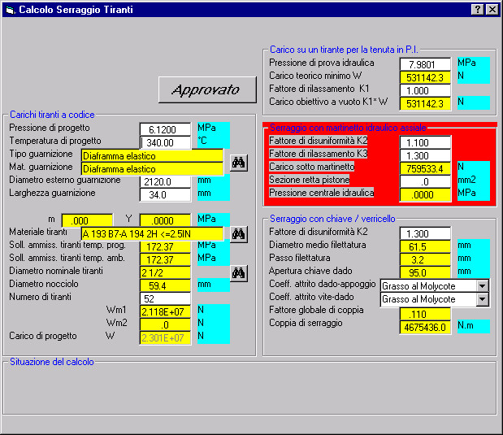

La seguente finestra si apre automaticamente alla fine dell'esecuzione della procedura di calcolo, se:

Questa finestra è ad aggiornamento automatico istantaneo, cioè i calcoli vengono rieseguiti ogni volta che il progettista cambia qualche dato.
Le caselle a sfondo bianco rappresentano i dati da fornire; quelli a sfondo giallo sono valori calcolati dal programma, o ottenuti da librerie (premendo i pulsanti con cannocchiale). Tuttavia anche i dati a sfondo giallo possono essere variati (da progettisti esperti).
I vari pannelli assumono un colore di fondo rosso quando alcuni dei dati contenuti non sono validi.